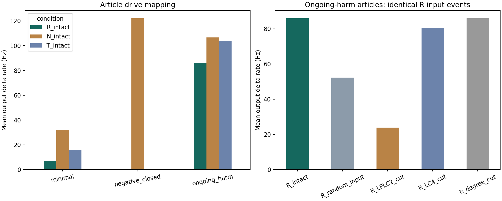

NEWS2NEURON · FINAL COMPUTATIONAL PILOT · 2026-11-16실제 뉴스에서 가상 회로 반응까지.
최종 결과와 해석.
실제 한국어 뉴스 평가, 가상 자극 변환, 실제 FlyWire 연결 구조를 사용하는 부분 회로 실험과 보강 대조를 구현·실행하고 결과를 고정했습니다.
실제 뉴스8,128건8개 매체 · 연구용 8,050건
직접 AI 판정1,074건나머지 7,054건은 v5 예측
새 회로 계산965회기사별 845 + 보강 120
전체 테스트140개최종 검증 8종 통과
최종 결론
재현 가능한 계산 파이프라인은 완성했습니다. 연결 구조와 입력·대조군 구성이 모델 출력에 큰 영향을 주었습니다. 그러나 뉴스 평가의 완벽한 정확도와 위협 회로의 생물학적 특이성, 초파리의 뉴스 이해 또는 사람의 스트레스 반응은 입증하지 못했습니다.
이번 산출물은 계산 파일럿으로 종료합니다. 출력 Hz는 정의한 가상 입력에 대한 LIF 모델 반응이며 실제 신경 활동·호르몬·불안의 측정값이 아닙니다. 미수행 실증 항목은 검증 완료로 표시하지 않습니다.
1. 뉴스 평가: 직접 판정과 모델 예측 분리
2026-08-12~11-09 UTC 발행 기사입니다. 10,000페이지 확인, 본문·날짜 통과 8,156건, 중복 28건 제거로 8,128건을 구성했습니다. 현재 날짜에 맞춰 새로 수집한 자료는 아닙니다. 본문·날짜·출처·중복·사건 가족·원자료 해시를 기록했습니다.
부정성 N과 잔존 위협 T를 구분하고 S/L/I/X로 잔존 위해 지수 R을 계산합니다. R은 연구 기준식이며 위험 확률이 아닙니다. 1,074건의 직접 AI 판정은 제목과 정제 본문 해시가 같은 버전에만 재사용합니다. 다른 기사는 v5 모델 출력으로 표시합니다.
후속 v6~v10 후보는 일부 지표 개선에도 채택 조건을 충족하지 못해 기본 모델로 승격하지 않았습니다. 판정자는 같은 AI 한 명이며 독립 사람 정답 정확도는 미검증입니다. 합성 테스트와 실제 뉴스도 분리했습니다.
2. 기사별 새 회로 실험
8,128건의 자극 파라미터를 만들고, 직접 AI 판정이 있는 실제 기사 24건에 7조건×5시드 840회와 무입력 5회를 새로 계산했습니다. 초기 세 단계 조회 결과를 기사에 다시 붙인 계산이 아닙니다. 연구 제외 78건에는 신경 입력률을 부여하지 않았습니다.
실제 FAFB v783 연결의 1,367개 뉴런·29,377개 방향성 연결을 사용했습니다. 가상 원판과 입력의 제시 시간은 400ms로 맞췄습니다. 평균 0~150Hz 및 시간별 입력 함수는 설계 가정이며 생리 보정된 시각 인코더는 아닙니다.
LPLC2 제거에서 약 72% 감소했지만, 다른 뉴런 제거와의 직접 자극 여부 차이·부분 회로 경계 등의 조건을 고려해야 합니다. 이 차이만으로 생물학적 회로 특이성을 결론 내리지 않습니다.

3. 대조군 보강으로 달라진 해석
같은 기사 8건에서 전달물질·출력 경로·연결 특징을 보강한 새 계산 120회를 수행했습니다. 이전 조건 80회는 재사용으로 따로 기록했고 새 계산 수에 포함하지 않았습니다.
GF의 표적-대조 차이는 155.06→27.03Hz로 줄었습니다. 대조군 구성에 민감한 차이였으며 여러 매칭 요인을 함께 바꿨으므로 단일 원인으로 분해하지 못했습니다.
이 부분 회로에서는 같은 hop 쌍·예측 전달물질로 314개 전부를 맞출 수 없었습니다. 정확한 층 매칭이 가능한 공통 178개에서 표적/대조는 GF 104.53/73.34Hz, DNp06 21.28/122.47Hz였습니다. DNp06의 반대 반응은 남았습니다. 178개 부분집합을 314개 전체로 일반화하지 않습니다.

4. 검증 완료와 미수행 항목
전체 테스트 140개, 저장 원응답에서 뉴스 8,128건 재추출, 초기 330회 원자료, v8~v10 판정·봉인·예측, 기사별 845회와 대조 보강 120회의 감사가 통과했습니다. 이벤트 배열과 스파이크 기반 지표를 재계산하고 대표 네트워크 실행의 스파이크 시점·뉴런 ID를 정확히 재현했습니다. 재현성 검사를 모델 정확도나 생물학적 타당성으로 바꾸어 해석하지 않았습니다.
최종 자료
ZIP은 최종 점수·보고서·방법 문서·검증 기록·새 두 회로 실험 원자료를 포함합니다. 전체 소스·학습 모델과 과거 실험은 News2Neuron 저장소에서 제공합니다. 원문 전문과 개인 특징 캐시는 포함하지 않았습니다.